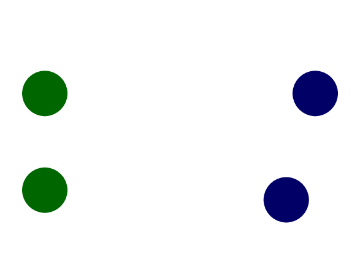

circuit, patterns, faults = read_input()
detected_faults = []
for p in patterns:
output_nofault = circuit.feed(p)
for f in faults:
if circuit.with(f).feed(p) != output_nofault:
detected_faults.append(f)
We implemented a simple scanner and parser.
We use a graph to represent a circuit.
The circuit graph is a DAG.
The algorithm runs in \(O(PF(V + E))\), where \(P, F, V, E\) are the number of patterns, fault, gates, wires, respectively.
If the value of a wire is 1 in under a pattern, then
we know that stuck-at 1 fault of this wire could never
be detected under this pattern.
If the fault happens at a vertex \(u\)'s input or
output, the output of vertex \(v\) would never change if
the topological order of \(v\) is smaller than \(u\).
Benchmarked with Intel i7 @ 4Ghz, g++ -O2
| Testdata | #gates | Time (s) |
| s27 | 13 | 0.001 |
| s298 | 136 | 0.003 |
| s35932 | 17793 | 0.614 |
| s38584 | 20679 | 0.782 |